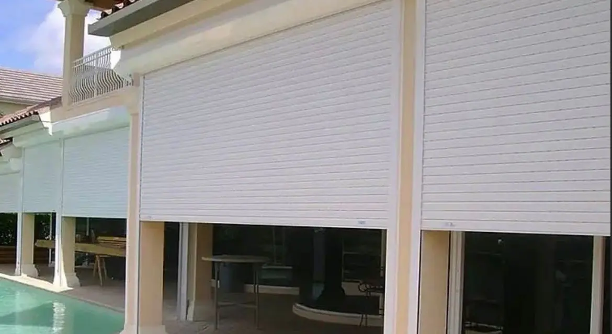

We look after condos, penthouses and villas in the Cancún Hotel Zone while you are away: scheduled preventive visits, repairs by our own crews, A/C, pool and garden checks, hurricane preparation and a photo report after every visit. Cancún's Hotel Zone is the 22 km sand bar of Kukulcán Boulevard between the Caribbean and Nichupté lagoon: condo towers from the 1980s to today on the beach and the lagoon, penthouses, and lagoon-front houses in Isla Dorada and around the Pok-Ta-Pok golf course, each building with its own administration and rules.

Monthly or weekly visits with a fixed checklist.
Plumbing, electrical, carpentry and paint by our own crews.
Cleaning, drains, pumps, softeners and filters.
Water balance, equipment and landscape care.
Shutters, drains, securing and post-storm inspection.
Report after each visit and immediate alerts.
Rust, sealants, A/C drains, roof membranes and pool equipment are the first problems in the Cancún Hotel Zone; our checklist targets them before they become damage.
The Hotel Zone is the first area evacuated before a hurricane, so from June to November we prepare properties as soon as a warning is issued and inspect them as soon as access reopens, with photos for you and your insurer.
We are registered with the building administrations, so our crews can enter on schedule and in emergencies.
You get one English-speaking project manager and one WhatsApp group, a weekly photo and video report, a live budget and payments by milestone after each stage is checked; most owners only fly in for handover.
| Plan | Includes | Price (MXN) |
|---|---|---|
| Condo plan | Monthly visit, checklist, photo report | $3,500–$7,500/month |
| Villa with pool and garden | Weekly checks, A/C, pool, garden | $7,500–$15,000/month |
| Hurricane preparation | Shutters, drains, securing, generator | $2,500–$6,000/visit |
| Handyman visit | Up to 2 hours, small repairs | $650–$1,200 |
Useful pages: Hotel Zone residences: full offer and calculator · House & Villa Renovation in the Cancún Hotel Zone · Condo Renovation in the Cancún Hotel Zone · New Condo Fit-Out in the Cancún Hotel Zone
| Stretch | Km | Side |
|---|---|---|
| Hotel Zone Entrance | km 0–3 | Bay and Bojórquez lagoon |
| Bay Beaches: Langosta, Tortugas and Caracol | km 3–8.5 | Caribbean bay facing Isla Mujeres |
| Pok-Ta-Pok | km 7–8, lagoon | Nichupté lagoon, golf island |
| Isla Dorada | lagoon islands | Nichupté lagoon, gated nautical residential |
| Punta Cancún | km 8.5–10 | The elbow: bay and open Caribbean |
| Central Hotel Zone: Chac Mool to Marlin | km 10–14 | Open Caribbean beach and La Isla lagoon front |
| South Hotel Zone: Ballenas, Delfines and Punta Nizuc | km 14–22 | Open Caribbean beach and Nichupté lagoon |
Send the unit or lot and what you want to do; you get a scoped quote with fixed prices in a few days.
Quote on WhatsAppFideicomiso: how foreigners own coastal property · Buying land in Mexico: due diligence · Concierge construction service · Managing a build from abroad · Build or buy in Playa del Carmen? · How long a build takes in Mexico · Contractor stopped? Finishing a stalled build · Closing on property: process and costs · Where to build: area by area · Cost to build a house in Mexico · Land use, COS and CUS · Soils studies on limestone
Related: Condo & Penthouse Fit-Out in Cancún · Smart Home Automation in Cancún · Property Maintenance — Entrance · Property Maintenance — Bay Beaches · Property Maintenance — Pok-Ta-Pok · Property Maintenance — Isla Dorada · Property Maintenance — Punta Cancún · Property Maintenance — Chac Mool–Marlin · Property Maintenance — South (Ballenas–Nizuc)
Your review helps other owners decide, and helps us improve.
Write a reviewRead our Google reviews